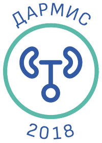

От имени Президента Межрегиональной ассоциации по клинической микробиологии и антимикробной химиотерапии (МАКМАХ), член-корреспондента РАН, профессора Романа Сергеевича Козлова сообщаем, что МАКМАХ совместно с Российским обществом урологов (РОУ) планирует проведение исследования динамики антибиотикорезистентности возбудителей инфекций мочевых путей в различных субпопуляциях — «ДАРМИС-2018».

От имени Президента Межрегиональной ассоциации по клинической микробиологии и антимикробной химиотерапии (МАКМАХ), член-корреспондента РАН, профессора Романа Сергеевича Козлова сообщаем, что МАКМАХ совместно с Российским обществом урологов (РОУ) планирует проведение исследования динамики антибиотикорезистентности возбудителей инфекций мочевых путей в различных субпопуляциях — «ДАРМИС-2018».
Цель исследования: изучить этиологическую структуру и чувствительность возбудителей внебольничных инфекций мочевых путей в отдельных субпопуляциях пациентов (взрослые, дети, беременные).
Сроки проведения исследования: сентябрь 2017 — май 2018.
Предыдущее подобное многоцентровое исследование («ДАРМИС») проводилось несколько лет назад, его результаты опубликованы в российских и зарубежных печатных изданиях (как один из примеров смотрите статью ниже). Для мониторинга чувствительности внебольничных уропатогенов к антибиотикам и изучения динамики антибиотикорезистентности планируется включение хорошо зарекомендовавших себя в прошлом центров-исследования, а также новых центров-участников.
Очень надеемся на Ваше активное участие, сотрудничество и поддержку!
В случае заинтересованности участия в исследовании «ДАРМИС-2018», пожалуйста, свяжитесь по электронной почте с координатором исследования:
Палагин Иван Сергеевич
научный сотрудник НИИ антимикробной химиотерапии (НИИАХ) ФГБОУ ВО СГМУ Минздрава России
E-mail: ivan.palagin@gmail.com
Приложения
Современное состояние антибиотикорезистентности возбудителей внебольничных инфекций мочевых путей в России: результаты исследования «ДАРМИС» (2010–2011)  PDF, 384 Кб
PDF, 384 Кб
Информационное письмо МАКМАХ PDF, 354 Кб